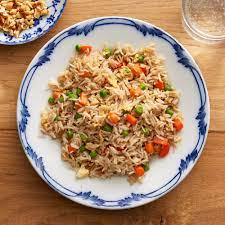

Fried Rice

Description
Fried rice is an easy dish to make that is great to use with leftover rice and other ingredients. Common ingredients for fried rice include leftover white or brown rice, assorted vegetables, eggs, soy sauce, and basic seasoning.
Today we will be creating a Fried Rice dish that combines common ingredients that can be found in any kitchen.
Ingredients
- 3 tbsp canola oil (can be substituted)
- 1 cup cooked white rice
- 2 beaten eggs
- 2 chopped scallions
- 1/3 cup diced onions
- 2 tsp minced garlic
- 2 tbsp soy sauce
- 1 tbsp sesame oil (optional)
- 1 tbsp butter
- salt and pepper to taste
Steps
- Add the canola oil to a preheated wok or frying pan.
- Once the oil is hot, add in the scallions, onions, and garlic.
- Lightly season the vegatables.
- After 30 seconds of cooking the vegetables, add the beaten eggs and scramble them till lightly cooked.
- Add in the white rice.
- Add the soy sauce, sesame oil, and butter.
- Start breaking up and stir frying the rice.
- Proceed to add any optional preferred (cooked) meat to the dish.
- Season the rice with salt and pepper to taste and serve.